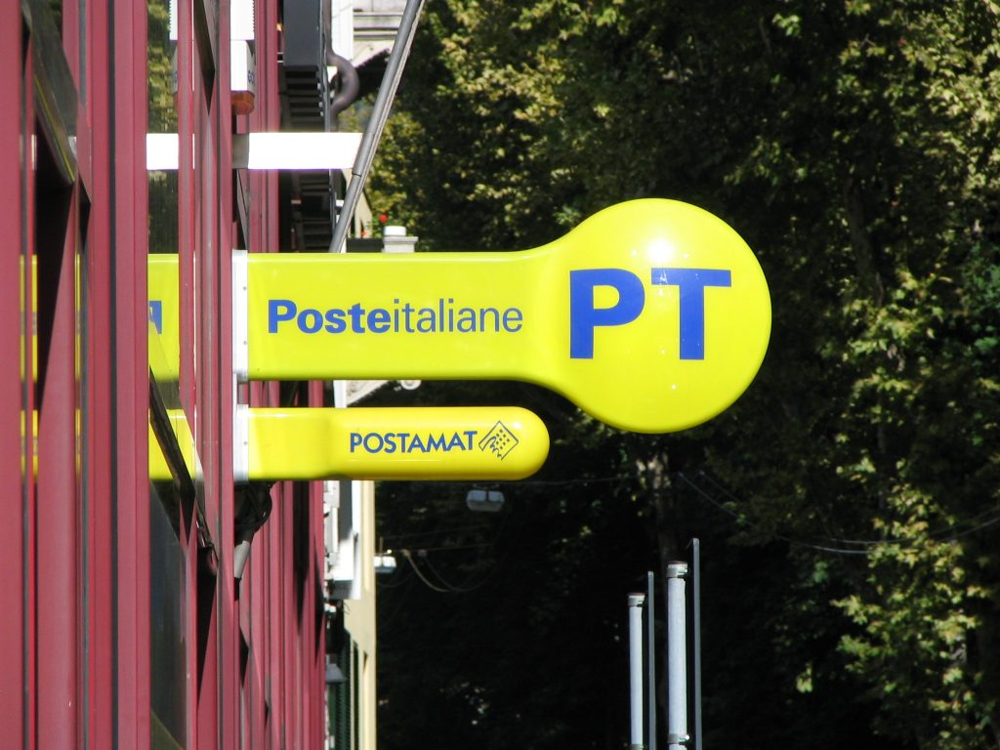

Italian post office sign
Fortunately, times have changed and the Italian postal service has greatly improved. Many years ago my uncle sent a postcard to his sister during one of his trips abroad. When my aunt received it she was very pleased, but also very much surprised. Why? Well, it took almost 40 years for the postcard to arrive. This is no joke, it happened to my family. But fear no more. Today it is a more efficient system that provides refunds and allows you to track your mail online. They even have a website written in English. Depending on the city, the post office is open Monday through Friday from around 8:00am to around 1:30pm. It closes at noon on Saturdays and on the last day of the month. It is always closed on Sunday. However, in every big city, there is a Main Post Office (Posta Centrale) which has extended hours and closes later, usually at 7pm as well as other smaller post offices which are usually centrally located. So, to summarize, some close at 1:30pm and some at 7pm (don't ask me why because I honestly don't know), but you can find out in advance the hours of a post office by searching its location on the official website. And remember, post offices are easily recognizable by a yellow and blue sign that says Posteitaliane and it is displayed outside the office. {This is an excerpt from chapter 9 “The Post Office” of the eBook “Italy from the Inside. A native Italian reveals the secrets of traveling in Italy”. Buy our eBook on Amazon and leave us a review! If it’s good, you’ll make us happy, if it’s bad, you’ll make us improve. Thank you either way!}